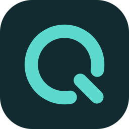
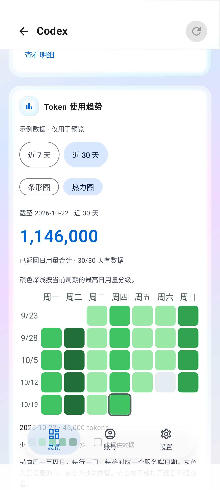

Codex
额度周期、重置时间与 Token 趋势。支持桌面组件和后台额度刷新。
设备登录
Quodex 下载应用
额度还剩多少，下次何时重置？
把分散的订阅、余额与使用趋势，
收进一个清楚、轻盈的视图。
总览、账号、设置。
各有其位，打开就懂。

你的 AI 工具，
在这里相遇。
清楚，从打开开始
总览掌握用量，账号管理连接，设置按你习惯。
少一点寻找，多一点从容。
玻璃表面，清晰文字。选中胶囊随操作流动，
也尊重系统的动画与可读性偏好。
点服务标题进入完整明细，查看周期、趋势与更多信息。
各服务独立连接，不要求先登录 Codex。网页示意不会连接账号。
启用“减少透明效果”可使用实色背景；桌面组件不读取壁纸。
网页功能示意 · 示例数值，不连接任何账号
按服务实际返回的周期展示。Codex 明细还能查询重置卡与 API 赠送福利，帮助你了解可用权益。
Codex 近 7 / 30 天条形图和日历热力图自由切换，逐日查看。缺失数据与真实零值分开显示。
未知值不补零，费用不当作余额。刷新失败时保留上次成功数据与时间，让状态清楚可见。
一个入口，多种连接
订阅额度与 API 账单分别呈现。
按账号、区域与币种展示实际数据，
不把不同单位混成一个数字。
额度周期、重置时间与 Token 趋势。支持桌面组件和后台额度刷新。
设备登录API 总余额、赠送与充值余额，CNY 与 USD 分别展示。
API keyGo 周期用量与重置时间；Console 工作区余额和可用额度。
按工作区连接会员用量、Code 窗口用量，以及国内 / 国际 API 余额，各自连接。
官网登录 / API key国际站当前周期的积分资源包，查看剩余与总积分。
官网登录 · 国际站已迁移账号的共享周额度与额外费用，一份订阅池清楚展示。
官网登录xAI API 预付余额使用团队 Management key；Cursor 团队费用使用 Admin key。与个人订阅分别连接。
xAI API / Cursor Admin API显示全部 7 组服务
Kimi、WorkBuddy、Grok / Cursor 在 App 内官方页面登录后，前台自动检查用量，正常缓存五分钟。其他订阅与 API 服务也在前台查询。接口、套餐与账号覆盖仍在持续验证。
查看接入范围抬眼可见，顺手就看
不用每次打开应用。额度、使用节奏和重置时间，放在你最顺手的位置。
桌面组件用于 Codex；后台刷新受网络、省电与 Launcher 调度影响。组件使用静态玻璃材质，不读取或模糊桌面壁纸。
凭据、API key 与订阅快照使用 Android Keystore 加密保存在设备上。网页登录状态由各服务独立的 WebView 私有目录管理。请求直接连接对应服务，没有自建中转服务或自动诊断上传。阅读完整隐私说明。
Codex 额度支持手动和后台周期刷新。其他服务在 App 前台自动检查，正常缓存五分钟，网页会话过期时需要重新登录。系统省电、网络和服务端限流可能影响更新时间；失败会保留上次数据与时间。
不需要。在“账号”选择你使用的服务，分别连接即可。也可以先体验示例模式；示例模式不发送真实额度请求。Kimi、WorkBuddy 和 Grok / Cursor 的官网登录不需要手工复制 Cookie 或 JSON。
应用支持 Android 10 及以上。各服务的接口、套餐和登录方式不同，部分服务可能限制嵌入式网页登录。WorkBuddy 目前支持国际站，OpenCode Go 存在接口迁移风险；真实账号和设备覆盖仍在验证中。查看支持范围。
Quodex 只读展示重置卡张数、状态与到期时间，以及 ChatGPT Pro / Business API 福利资格和赠送金额。使用卡片、领取福利与账单管理请前往官方页面。赠送金额不等于消费后剩余余额。
给用量一个清楚的位置
下载 Quodex，连接你的服务。
或者先从示例模式，认识它。
当前为 Alpha 预发布，尚未上架 Google Play。后续可在“设置 → 应用更新”中检查、下载并安装。